Regression
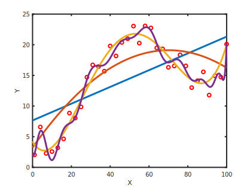How high does a bouncy ball bounce?
How high does a bouncy ball bounce?
| ↓ | Translate the question into a data problem |
When we drop a bouncy ball from rest at height \(h_{drop}\), what height \(h_{bounce}\) will it
reach on its first bounce?
How high does a bouncy ball bounce?
| 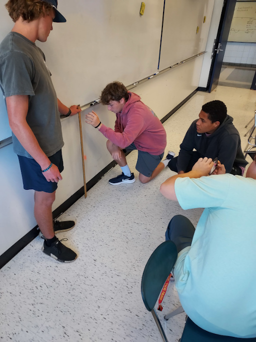 |
How high does a bouncy ball bounce?
|
How high does a bouncy ball bounce?
|
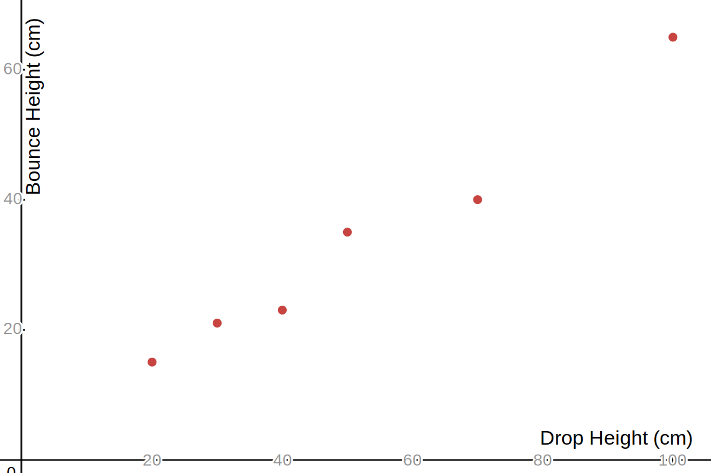
|
How high does a bouncy ball bounce?
|
True relationship
\(Y = \beta_{0} + \beta_{1}X + \epsilon \)
Approximation
\(\hat{Y} = \hat{\beta}_{0} + \hat{\beta}_{1}X \) |
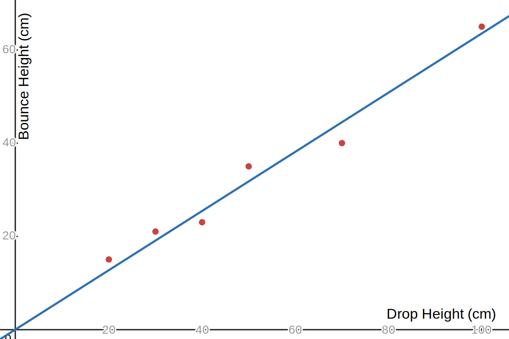
|
How high does a bouncy ball bounce?
|
\[\hat{Y} = \hat{\beta}_{1}X \]
|
How high does a bouncy ball bounce?
|
\[ \hat{Y} = \hat{\beta}_{1}X \]
\(\hat{\beta}_{1}\) is a model parameter: a tuneable value in our model
|
How high does a bouncy ball bounce?
|
The residual error between the observed data \((x_i, y_i)\) and the model
is:
\[ e_{i} = y_i - \hat{y}_i \]
where
\[ \hat{y}_i = \hat{\beta}_{1} x_{i} \]
|
 |
How high does a bouncy ball bounce?
| The sum of squared error is the sum of squares of the errors! \[ SSE = \sum_{i=1}^{n} e_{i}^{2}\] \[ SSE = \sum_{i=1}^{n} (y_i - \hat{y}_i)^{2} \] |
|
| Data |
|
||||||||||||||
|---|---|---|---|---|---|---|---|---|---|---|---|---|---|---|---|
| Model | \[ \hat{h}_{bounce} = \hat{\beta}_{1} h_{drop} \quad \text{\tiny Constrained Linear Model}\] | ||||||||||||||
| Optimized Parameter | \[ \hat{h}_{bounce} = 0.64 \ h_{drop} \quad \text{\tiny minimized SSE} \] |
Model Interpretation
What does the parameter in our model mean?
\( \hat{h}_{bounce} = \hat{\beta}_{1} h_{drop} \)
Model Interpretation
\( \hat{h}_{bounce} = \hat{\beta}_{1} h_{drop} \)
\(\hat{\beta}_{1}\) is the slope, \(\frac{h_{bounce}}{h_{drop}}\)
This is the ratio of bounce height to drop height
and means we predict \(h_{bounce}\) to be 64% of \(h_{drop}\)
and means we predict \(h_{bounce}\) to be 64% of \(h_{drop}\)
Practice
Using the model:
\[ \hat{Y} = 2 + \frac{1}{3}X \]
|
\(\quad\) |
|
| 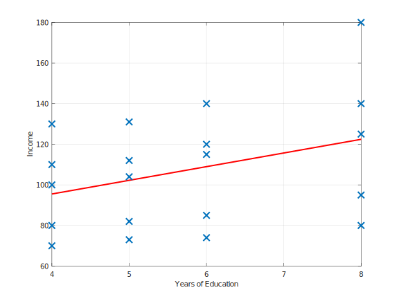 | 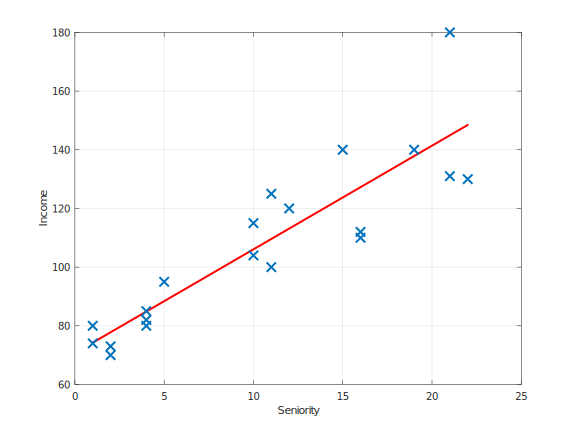 |
| \[\hat{Y} = \beta_0 + \beta_1 X_1\] | \[\hat{Y} = \beta_0 + \beta_1 X_2\] |
\(\hat{Y} = \beta_0 + \beta_1 X_1 + \beta_2 X_2\)
Consider a possible data set on final exam grades.
| Final Ex. Grade | Hours Studied | Days Missed | Visits B/A School | Questions Asked | Homeworks Done |
|---|---|---|---|---|---|
| A- | 4 | 7 | 2 | 57 | 130 |
| D+ | 1 | 13 | 0 | 4 | 71 |
| B- | 4 | 2 | 0 | 34 | 112 |
| A | 6 | 4 | 5 | 30 | 130 |
| C+ | 0 | 14 | 0 | 16 | 88 |
| B- | 1 | 10 | 1 | 49 | 122 |
Consider a possible data set on final exam grades.
| \(Y\) | \(X_1\) | \(X_2\) | \(X_3\) | \(X_4\) | \(X_5\) |
|---|---|---|---|---|---|
| A- | 4 | 7 | 2 | 57 | 130 |
| D+ | 1 | 13 | 0 | 4 | 71 |
| B- | 4 | 2 | 0 | 34 | 112 |
| A | 6 | 4 | 5 | 30 | 130 |
| C+ | 0 | 14 | 0 | 16 | 88 |
| B- | 1 | 10 | 1 | 49 | 122 |
Consider a possible data set on final exam grades.
| \(Y\) | \(X_1\) | \(X_2\) | \(X_3\) | \(X_4\) | \(X_5\) |
|---|---|---|---|---|---|
| 3.7 | 4 | 7 | 2 | 57 | 130 |
| 1.3 | 1 | 13 | 0 | 4 | 71 |
| 2.7 | 4 | 2 | 0 | 34 | 112 |
| 4.0 | 6 | 4 | 5 | 30 | 130 |
| 2.3 | 0 | 14 | 0 | 16 | 88 |
| 2.7 | 1 | 10 | 1 | 49 | 122 |
\(\hat{Y} = \beta_0 + \beta_1 X_1 + \beta_2 X_2 + \beta_3 X_3 + \beta_4 X_4 + \beta_5 X_5 \)
| \(Y\) | \(X_1\) | \(X_2\) | \(X_3\) | \(X_4\) | \(X_5\) |
|---|---|---|---|---|---|
| 3.7 | 4 | 7 | 2 | 57 | 130 |
| 1.3 | 1 | 13 | 0 | 4 | 71 |
| 2.7 | 4 | 2 | 0 | 34 | 112 |
| 4.0 | 6 | 4 | 5 | 30 | 130 |
| 2.3 | 0 | 14 | 0 | 16 | 88 |
| 2.7 | 1 | 10 | 1 | 49 | 122 |
Model Validation
How can we verify that our model works,
or that it is useful?
or that it is useful?
Model Validation
Data Splitting
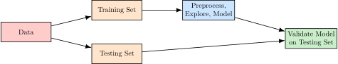
Big Assumptions for Modeling
- There is a relationship
- We can make measurements
- The data can be meaningfully modeled, i.e.,
we achieve at least one of:
- Inference — Understanding the relationship between the input and response variables
- Prediction — Good predictions on future data
True underlying relationship, \(f\)
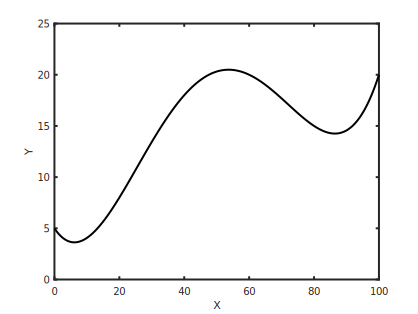
Data has noise, \(f + \epsilon \)
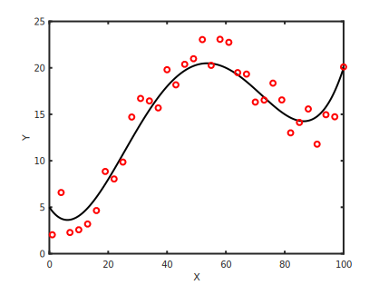
We don't know the truth, \(f = ?\)
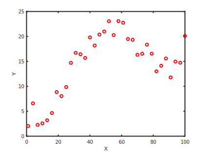
Model the data with \(\hat{f}\) to approximate \(f\)
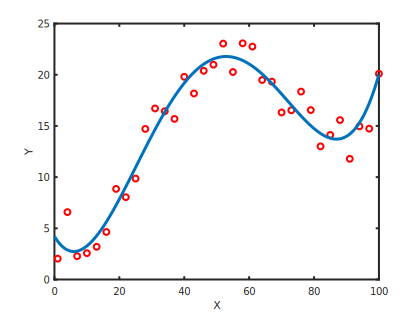
Try a linear model, \(\hat{f}_{1}\)
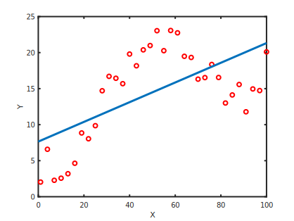
Try a quadratic model, \(\hat{f}_{2}\)
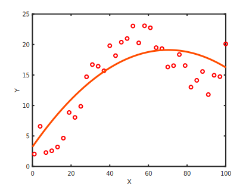
Try a high-order polynomial, \(\hat{f}_{12}\)
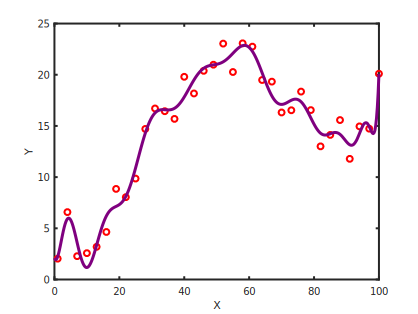
Try lots of models, \(\hat{F} = \{ \hat{f}_{1},\hat{f}_{2},...\} \)
A few Function Models
| Linear | \(Y = \beta_0 + \beta_1 X_1 + \beta_2 X_2 + \beta_3 X_3 + \dots \) |
| Polynomial | \(Y = \beta_0 + \beta_1 X + \beta_2 X^2 + \beta_3 X^3 + \dots \) |
| Sinusoidal | \(Y = \beta_0 \sin(\beta_1 X + \beta_2) + \beta_3 \) |
| Exponential | \(Y = \beta_0 e^{\beta_1 X} \) |
| Power | \(Y = \beta_0 + X^{\beta_1} \) |
| Logistic | \(Y = \frac{\beta_0}{1 + e^{- \beta_1 (X - \beta_2)}} \) |
Which model is correct?
It depends... None of them?
Interpretability vs. Prediction Accuracy
- Simple models offer easier interpretation but may not predict as accurately.
- Complex models (like collections of deep neural networks) may offer better predictive power but are difficult to interpret.
Fit the model \( Y = \beta_{1} X \) to the data
| X | Y |
|---|---|
| 1 | 1.2 |
| 2 | 3.5 |
| 3 | 6.5 |
| 4 | 7.3 |
| 5 | 8.9 |
How High Does the Bouncy Ball Bounce?
- Design an experiment
- Collect data
- Model the data
- Validate the model
- Write a brief report
Regression Review
- Data are recorded observations of independent and dependent variables.
- A model is an abstract representation intended to explain or predict relationships in data.
- A parameter is an adjustable value in a model that can be tuned.
- Regression involves optimizing the parameters of a model to minimize some error between data and model prediction.
- Data splitting is one method of model validation where data are split into training and testing sets. The testing set is not used until the model is ready to be validated.
- Residual error \(e_{i}\) is the model prediction error, \(y_i - \hat{y}_{i}\).
- Squared error \(e_{i}^2\) is the square of the model prediction error, \((y_i - \hat{y}_{i})^2\).
- Sum of squared error is the sum of squared errors \(\sum_{i}e_{i}^{2}\)
Further Reading
©2025 Jedediyah Williams
This work is licensed under the Creative Commons
Attribution-NonCommercial-ShareAlike 4.0
International License.

To view a copy of this license, visit https://creativecommons.org/licenses/by-nc-sa/4.0/.